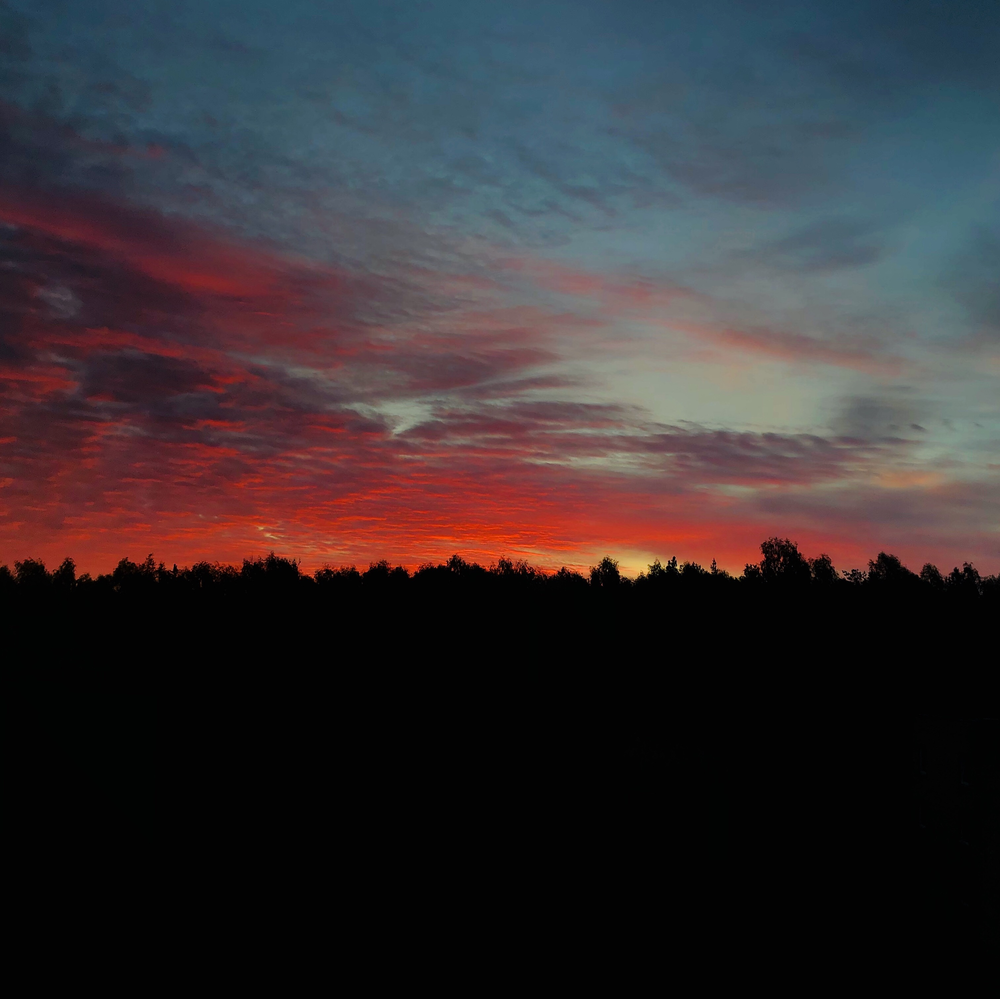
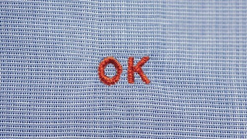
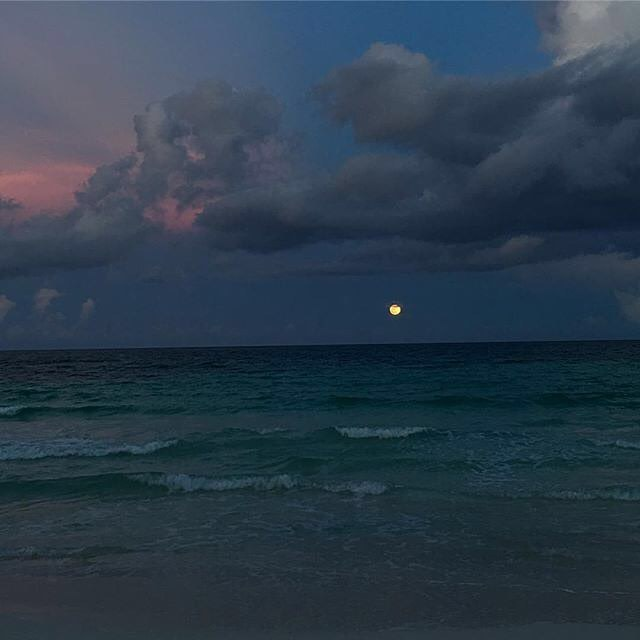
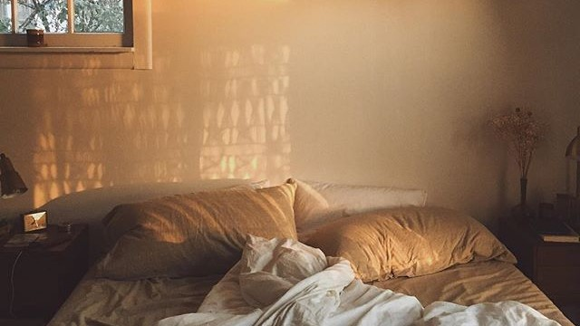
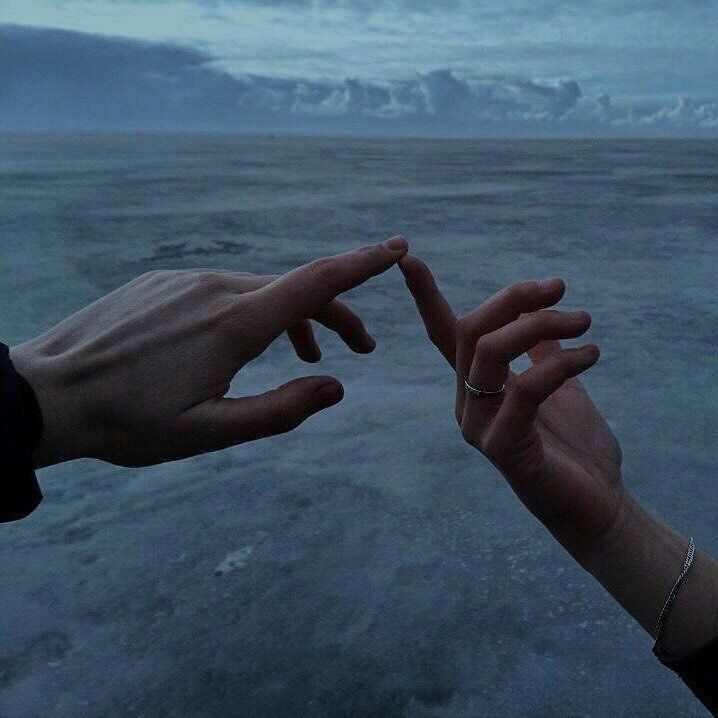
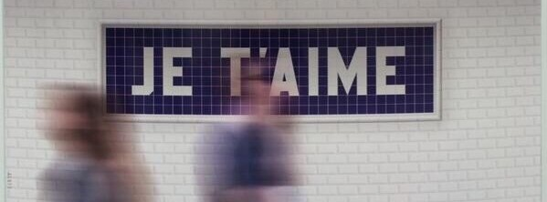
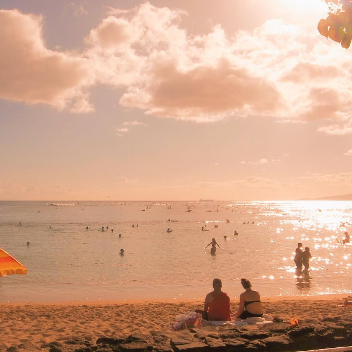

These are the steps you take.
You acknowledge the world and your surroundings.
You process the information and make a reaction.
You listen to the news and gather as much information as you can.
You try to take action by throwing a little bit of effort every day.
Every day gets longer and more tiring... You wear out but continue on.

You wait it out.
You binge-watch, binge-eat, you sleep all day.
All to make the truth fade away.
You look outside and hope one day you can go outside again, and it would all be okay.


You slowly let it go.
You quickly go mad.
You calm yourself down and say you're trying your best.
You'll make it through as we all believe we'll do.


You find new things to do.
You learn new things about yourself.
You make time for yourself and your loved ones.
You make time for thought.
You make time for art.
You make time for love.

You make time for change.
You love your world and your surroundings more now.
You care for the world and your friends and loved ones more now.

You will remember these days and remember the hope you kept within you.
So, carry on...